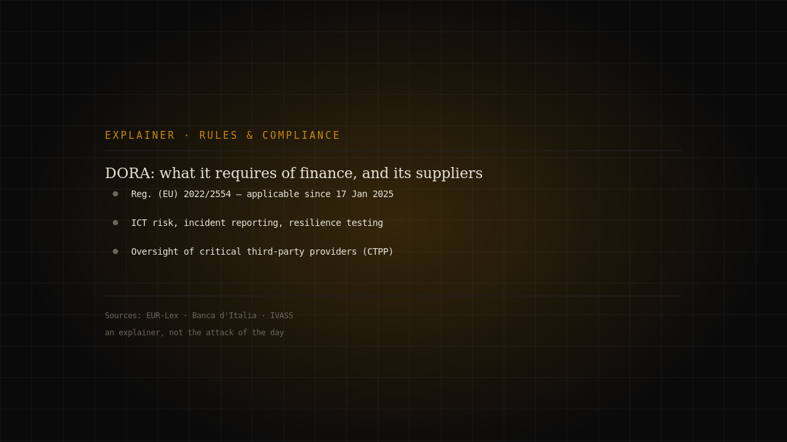
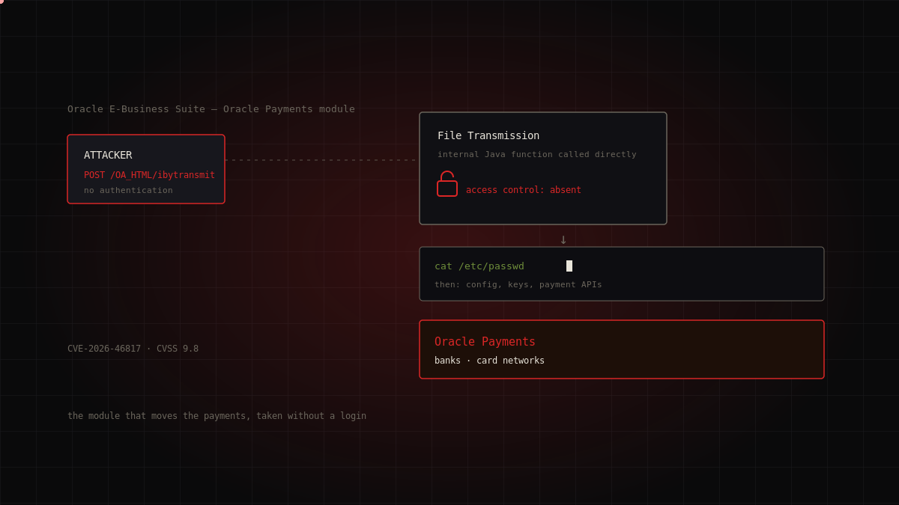
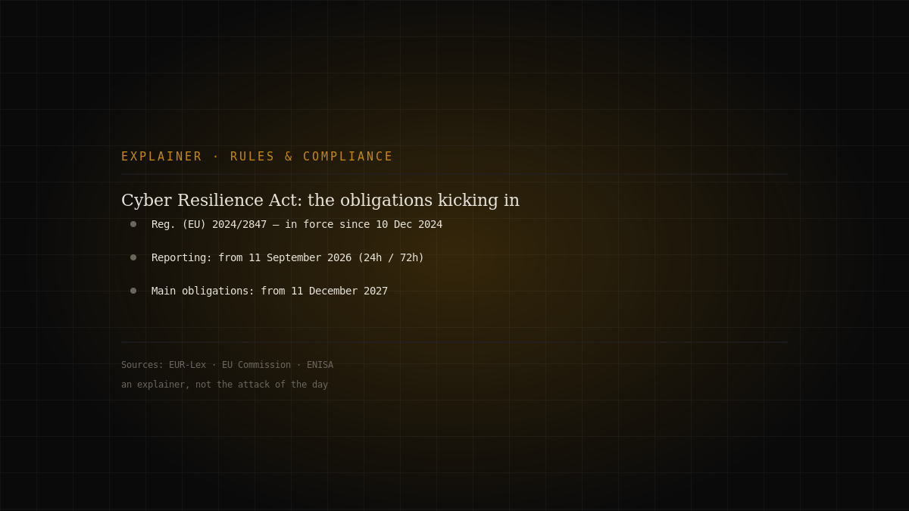

Topic · Compliance
Regulations and compliance
The European rules governing security and data — and why they're not just red tape.

Dossiers in this section
3 dossiersDORA, one year on: what it really requires of finance, and why it reaches IT suppliers too
Not an attack, but the resilience framework the European financial sector must hold up under when incidents hit. Regulation (EU) 2022/2554 — DORA, the…
Editorial explainer · official sources · medium
Continue reading →
The module that moves the payments, taken without a login: CVE-2026-46817 in Oracle E-Business Suite
Oracle Payments is the payment engine inside Oracle E-Business Suite: the point where the company's finance applications talk to banks and card n…
Unattributed (first observed on Defused honeypots; no public campaign or actor) · critical
Continue reading →
Cyber Resilience Act: what kicks in on 11 September 2026, and what waits for 2027
Not an attack, but a deadline drawing closer. The Cyber Resilience Act — Regulation (EU) 2024/2847 — has been in force since 10 December 2024, but its…
Editorial explainer · official sources · medium
Continue reading →The topic in brief
Three European pillars
The European legal framework rests on interlocking regulations and directives. The GDPR (Reg. EU 2016/679) governs the processing of personal data. NIS2 (Dir. EU 2022/2555) mandates security measures and incident-reporting obligations for operators in critical sectors. DORA (Reg. EU 2022/2554) does the same for the financial sector, with rules on digital operational resilience and critical ICT providers.
From paper to practice
Compliance isn't filling in a form: it's a process. Risk analysis, proportionate technical and organisational measures, incident-notification procedures within set deadlines, governance with top-management accountability. NIS2 in particular shifts compliance from the IT department to the board.
Why it's worth it, not just mandatory
The very measures the rules require — asset inventory, patch management, access control, response plans — are the ones that reduce real risk. Compliance done well isn't a cost separate from security: it is security, written down in a verifiable way.
FAQ
- What's the difference between GDPR and NIS2?
- GDPR protects personal data; NIS2 mandates cybersecurity measures and incident reporting for operators in critical sectors. Both can apply.
- What is DORA?
- The Digital Operational Resilience Act (Reg. EU 2022/2554): digital operational resilience rules for the financial sector and its critical ICT providers.